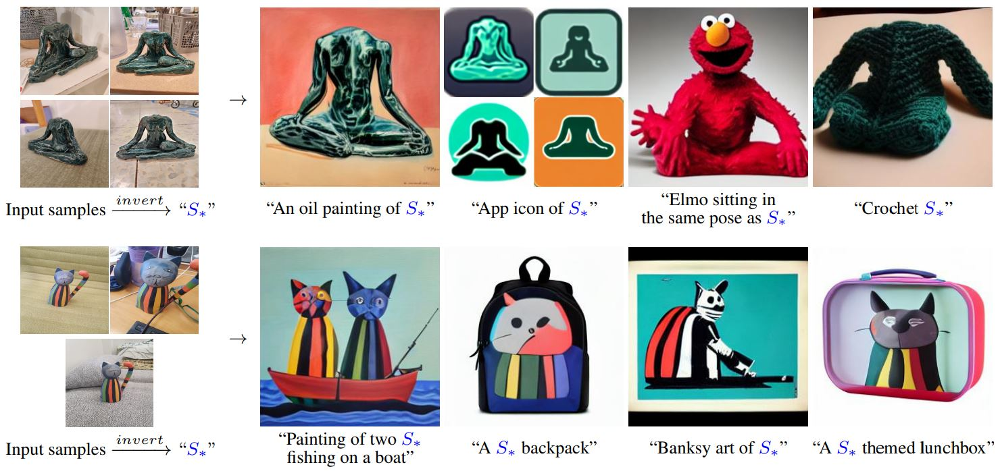

Image generation
Textual Inversion
Represent a personal visual concept with a new token that can be reused in text prompts.

What you’ll build
Learn one embedding for a new concept token, then combine it with unfamiliar scenes and descriptions.
Model and adaptation
Stable Diffusion 1.5 with one trainable CLIP token embedding; the diffusion model and other embeddings stay frozen.
Textual inversion stores personalization in an embedding rather than a diffusion-model adapter. SDXL or FLUX experiments require a separate implementation beyond the course's SD 1.5 trainer.
Data
Training
5–10 photographs of one subject; reserve separate validation and test images before training.
Evaluation
Held-out photographs and matched baseline/personalized generations using identical prompts, seeds and sampling settings.
How to measure success
- DINO-I ↑
- Similarity of the generated subject to reference photos.
- CLIP-I ↑
- Visual consistency with the learned concept.
- CLIP-T ↑
- Prompt alignment, measured using the ordinary text description.
What to submit
- A learned embedding that reloads into the base model.
- A prompt gallery showing the concept in different contexts.
- A baseline comparison and a discussion of identity versus flexibility.